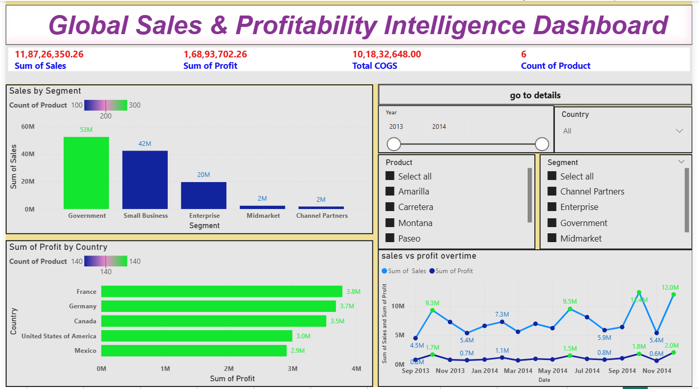
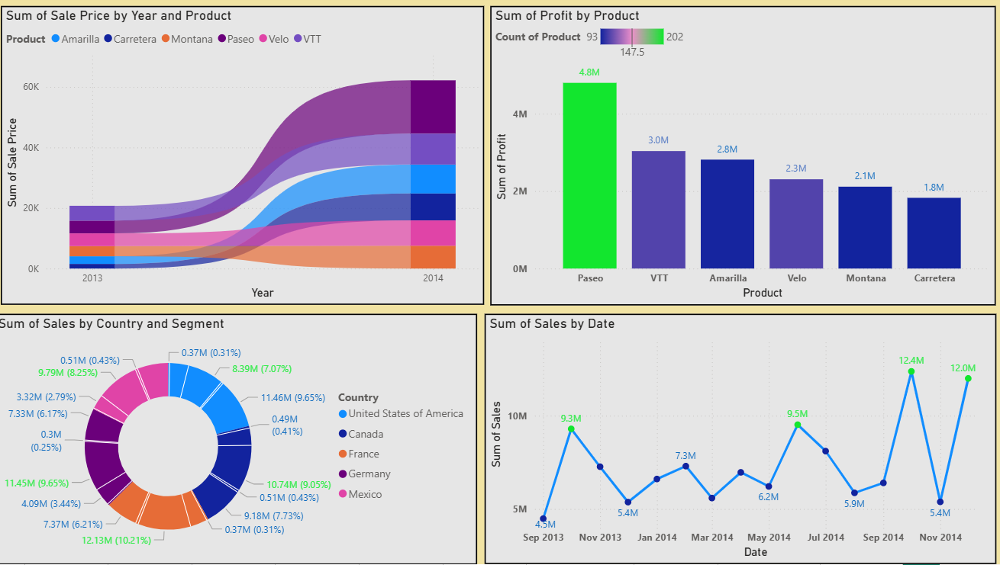

This project focuses on analyzing enterprise-level financial data and transforming raw accounting records into actionable business intelligence insights using Power BI and advanced data modeling techniques. The objective was to simulate a real-world financial analytics environment where management relies on dashboards to monitor profitability, revenue trends, cost structures, and financial health indicators.
The dashboard provides a centralized and interactive platform to track KPIs such as Revenue, Net Profit, Gross Margin, Operating Expenses, and Cash Flow trends. The project demonstrates strong expertise in financial analysis, data transformation, KPI calculation, and executive-level dashboard design aligned with corporate reporting standards.
Organizations require real-time visibility into their financial performance to ensure profitability, control costs, and make strategic investment decisions. Raw financial statements alone do not provide clear insights without structured analysis and visualization.
This dashboard addresses that challenge by converting complex financial data into meaningful metrics and visual insights, enabling faster, data-driven financial decision-making.

